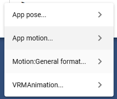

11.1. Save pose/motion
11.1.1. Save pose/motion
You can save poses and motions from the ribbon bar.
Ribbon bar > 3D Model tab > Pose/Motion > Save
The menu is structured as follows.
Type of saving |
device storage |
Internal storage |
Google Drive |
|---|---|---|---|
App pose |
o |
o |
o |
App mlotion |
o |
o |
o |
General format (.bvh / .anim) |
o |
x |
x |
VRMAnimation |
o |
o |
x |
11.1.1.1. save pose
For VRoid/VRM only, the pose can save the state in which the IK markers of the whole body are moved. This is per single pose, not animation.
Make the VRoid/VRM pose.

Click “Save” from Pose/Motion on the “3D Model” tab.
Click an app pose.
Select
Terminal,Internal Storage, orGoogle Driveas the save destination.Enter the pose name.
The pose will be saved.
Save/Do not save thumbnails
Pose files support thumbnails. It doesn’t affect the actual behavior at all, but it makes it easier to see in the list. To avoid saving, uncheck Save thumbnails when saving poses in the settings screen.
There doesn’t seem to be any problem, so the thumbnail will be included in the data even if you save it to your device.
Hint
There is no need to register keyframes when saving poses.
- What data was saved?
In the case of internal storage, it is saved within the app (in the browser you are using). Since it is a place like a dedicated area for each application that is different from the folder on the local disk, it is not visible from other applications.
If you are using a device, the file will be saved in a folder on your PC.
In the case of Google Drive, it will be saved within Google Drive.
Caution
In the case of Google Drive, the user must separately obtain a Google account and set up Google AppsScript in advance.
11.1.1.2. save motion
For motion, all timeline (roll) types can be saved.
Select the timeline (roll) in which you want to save the motion from the timeline list.
Click “Save” from Pose/Motion on the “3D Model” tab.
Click an app motion.
Select
Terminal,Internal Storage, orGoogle Driveas the save destination.Enter the motion name.
The motion will be saved.
There are no thumbnails for motion.
Warning
Pay attention to the physique of the VRM that creates the motion
When creating motion data with a VRM, if you replace it with a VRM of a different height or physique in the middle, there will be a difference in ground contact and each part. Be sure to complete the motion creation using the same VRM.
- Example:
Create a motion halfway with a 160cm VRM and save it as a file.
Load the vvmmot file into a 155cm VRM on another day and create a continuation of the motion.
On another day, load the vvmmot file into a 140cm VRM and play the motion.
In this case, the 140cm VRM of 3 causes the whole body to rise and fall during the motion, causing unexpected movements.
Caution
After loading a motion, if you want to save it as a motion file again, be sure to register each keyframe once.
Immediately after loading a motion, the timeline (roll) contains a mixture of height information from the current VRM and height information from another VRM as reference information in the motion.
This has the same meaning as the problem of “Be careful of the physique of the VRM that creates the motion” above.
11.1.2. Save in various formats
11.1.2.1. Save app poses and motions to disk
Even after saving to internal storage or Google Drive, you can save it back to your device. This is the procedure for using the conventional pose/motion list window.
Click “Open” from Pose/Motion on the “3D Model” tab.
Click on the app pose or app motion.
A window with a list of poses and motions will open.

Select the Pose or Motion tab on the right side of the toolbar.
Select the pose or motion you want to download.
Click the Download button on the toolbar.
- Save format:
Kind
Extension
Pose
.vvmpose
Motion
.vvmmot
Note
The content is in JSON format. It is downloaded with a unique extension for easy identification.
11.1.2.2. Save the motion in a general format such as Unity
Although only VRM is available, it is also possible to save in a general-purpose animation format.
Timing when general-purpose motion is registered
When registering a key frame
When a registered keyframe is selected on the timeline
Select the timeline (roll) in which you want to save the motion from the timeline list.
Click “Save” from Pose/Motion on the “3D Model” tab.
Click a Motion: general format.
Choose
.bvhor.anim.Enter the file name and press the
OKbutton.
- Save format:
.anim
Note
General-purpose formats can only be saved to the device.
.anim files are AnimationClip files that can be read directly by Unity.
Warning
When loading an existing project or motion, be sure to select the registered keyframes one by one to actually move the VRM. Otherwise, data in a generic format will not be saved.
As of this application
ver 2.6.0, .bvh cannot be selected because it is difficult to implement..anim is currently in experimental operation, so we cannot guarantee its operation. The rotation of certain bones may be broken. note that.
.anim files cannot be reloaded by this app.
11.1.2.3. Export in VRMAnimation format
.vrma file is a newly defined motion format exclusively for VRM in UniVRM.
See below for details.
Select the timeline (roll) in which you want to save the motion from the timeline list.
Click “Save” from Pose/Motion on the “3D Model” tab.
Click VRMAnimation.
Click
Terminal'' or ``Internal Storageas the save location.Enter the motion clip name.
Next, enter the file name and press the
OKbutton.
- Save format:
.vrma
Note
From ver 2.5.0, it is now possible to read and play .vrma files. Playing and using the animation of OtherObject is the same.
Warning
When loading an existing project or motion, be sure to select the registered keyframes one by one to actually move the VRM. Otherwise, data in a generic format will not be saved.
The first keyframe will not be registered correctly because the duration will be 0. Be sure to register the same motion second in succession. (The frame number can be anything)
Like .anim, .vrma is in experimental operation and cannot be guaranteed to work.
Although it is officially stated that LookAt and BlendShape are also supported, it is still difficult to implement as the code sample for the essential inclusion method has not been released. In this application, only bone movements other than LookAt and BlendShape can be saved as VRMAnimation.
11.1.2.4. Clear VRMAnimation keyframe data
Delete the existing internally held keyframe data for VRMAnimation. If you register a key frame again for each frame, it will be easier to register from scratch.
Click Delete Keyframe on the Animation tab of the ribbon bar.
Click
Remove only VRMAnimation.
Note
Motion data for VRMAnimation is registered behind the system at the same time as the unique motion of this application is registered as a key frame.
In principle, the same motion as the motion of this application will be registered, but it may not be completely the same because the types of bones to be registered are different. Sometimes there may be a slight shift or one frame may be missing.
In such cases, this function deletes the existing keyframe data for VRMAnimation.